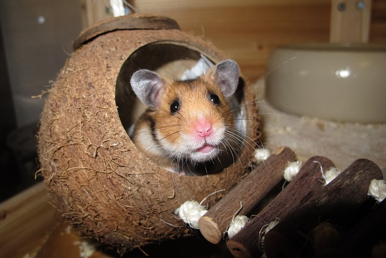
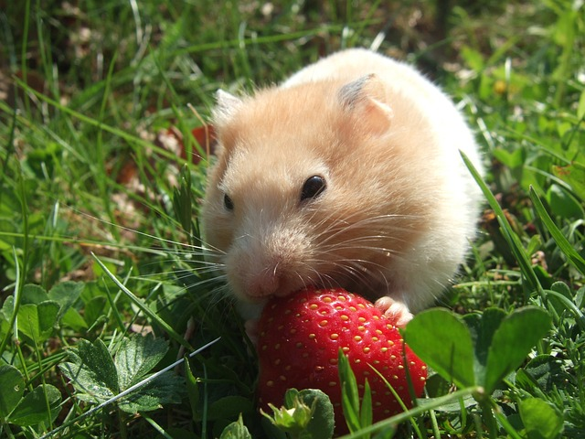
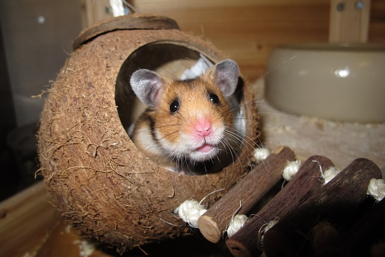
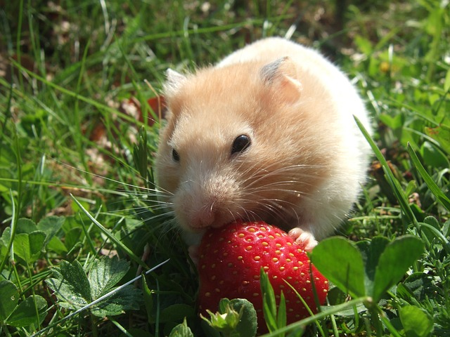

Other Pets
PLANNING TO ADOPT?
CHECKLIST FOR NEW ADOPTERS
Here are some of the checklist you need to consider before adpoting a pet.
- Learn as much as you can about your new pet.
- Create a schedule and assign tasks.
- Choose your words wisely.
- Set expectations and boundaries.
- Pet-proof the house.
- Read up on training—especially, housebreaking.
- Choose a veterinarian.
- Buy supplies as a family.
- Meet other pet owners in the neighborhood.
PET ADAPTION FAQS
Few questions you need to ask yourself and learn before adpopting.
- What's the pet's average life span?
- How much free time do you have available each day?
- How much space do you have?
- How much money can you spend?
- How often are you home?
- How frequently do you travel?
- How active are you?
- What type of vet care is available?
- Does your residence restrict certain pets?
- Are you allergic?
PETS AVAILABLE NEARBY

 


